CONTACT
Contact Us
お問い合わせ
Contact 連絡先
研究活動へのご支援、産学連携・共同研究・大学院に関するご相談など、お問い合わせはこちらにご連絡ください。
担当：野上 彩子
nogami.a.615d@m.isct.ac.jpAccess 所在地・アクセス
TRANSPORT
JR 御茶ノ水駅 下車
東京メトロ丸ノ内線 御茶ノ水駅 下車
東京メトロ千代田線 新御茶ノ水駅 下車